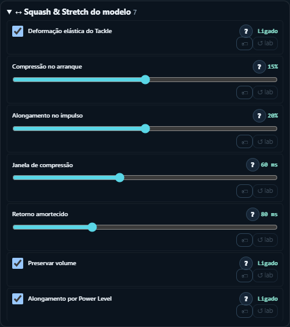

Entrega isolada: branch codex/tackle-squash-stretch, worktree temporário interno. O jogo do checkout principal não foi alterado.
Abrir o jogo · Portal · Documentação
Controles em Ações → Tackle → Squash & Stretch do modelo. Use um GLB animado em Personagens.
Validação: npm test, typecheck, build e checagem offline aprovados. O comando verify recusa o worktree por exigir o checkout principal. Resumo dos comandos.
Resultado do teste no navegador
Limites: não analisamos o impacto específico deste efeito em FPS/GPU; não verificamos todos os modelos do acervo.
